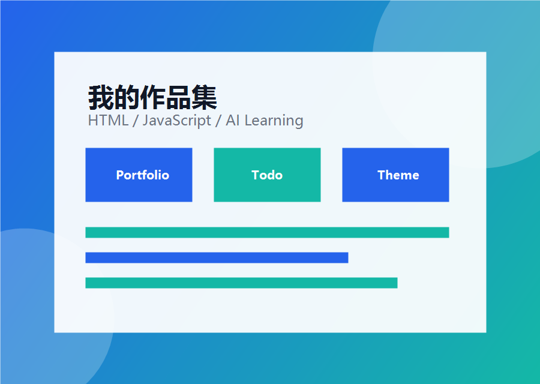

个人网站
我的第一个个人主页项目，包含关于我、技能展示、项目展示和主题切换功能。
HTML
CSS
JavaScript
Portfolio Website
我正在使用 Codex 学习网页开发

我是 ZHOUT，目前正在从0基础学习网页开发。我使用 Codex 辅助学习 HTML、CSS 和 JavaScript，并通过实战项目逐步提升自己的开发能力。
目前我已经完成了个人主页、主题切换、项目展示和 Todo List 等练习项目。
负责网页结构
负责网页样式
负责网页交互
辅助生成和修改代码
保存本地数据
我的第一个个人主页项目，包含关于我、技能展示、项目展示和主题切换功能。
一个可以添加、删除和保存任务的待办事项小应用。
支持深色模式和浅色模式切换，并能记住用户选择。